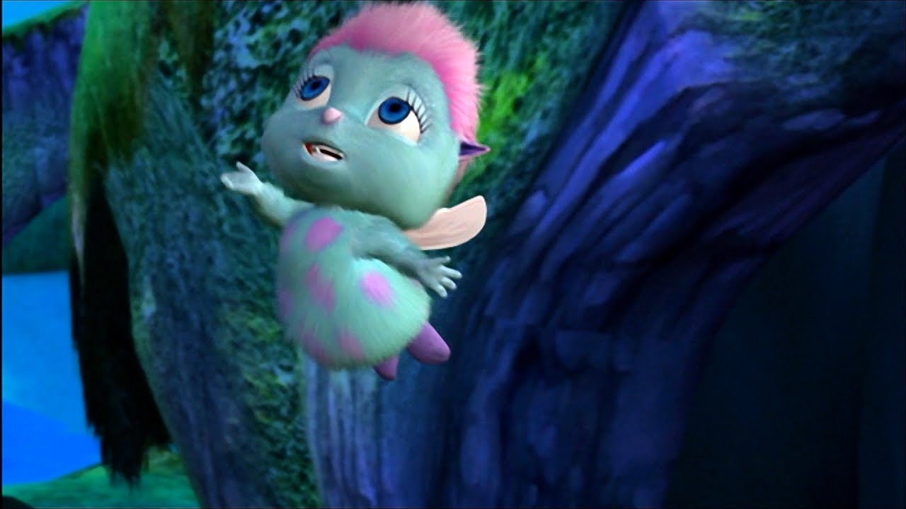

About Bibble
Bibble is highly regarded to be the most dashing and crush-worthy male character in the entire barbie cinematic universe (BCU). A phenominal singer, personality to die for and off-the-charts good looks to match!
Bibble And His Freinds
Bibble's Characteristics
- He's sexy
- He's sweet
- He's the smartest in the BCU
Bibble's Friends
There's a common misconception that Bibble is merely a side-character. In fact, if you have a direct line to God you will know that he is the most important and interesting character in the entire BCU, and therefor, in a sense, the main character of the entire franchise. However, Bibble does have some nice friends. Click on the links below to read about them.